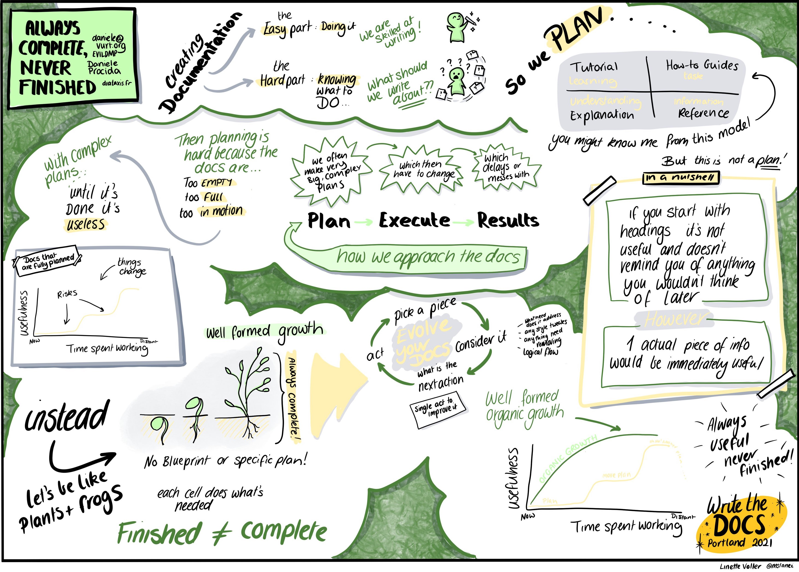

Diátaxis as a guide to work¶
As well as providing a guide to documentation content, Diátaxis is also a guide to documentation process and execution.
Most people who work on technical documentation must make decisions about how to work, as they work. In some contexts, documentation must be delivered once, complete and in its final state, but it’s more usual that it’s an on-going project, for example developed alongside a product that itself evolves and develops. It’s also the experience of many people who work on documentation to find themselves responsible for improving or even remediating a body of work.
Diátaxis provides an approach to work that runs counter to much of the accepted wisdom in documentation. In particular, it discourages planning and top-down workflows, preferring instead small, responsive iterations from which overall patterns emerge.
Use Diátaxis as a guide, not a plan¶
Diátaxis describes a complete picture of documentation. However the structure it proposes is not intended to be a plan, something you must complete in your documentation. It’s a guide, a map to help you check that you’re in the right place and going in the right directions.
The point of Diátaxis is to give you a way to think about and understand your documentation, so that you can make better sense of what it’s doing and what you’re trying to do with it. It provides tools that help assess it, identify where its problems lie, and judge what you can do to improve it.
Don’t worry about structure¶
Although structure is key to documentation, using Diátaxis means not spending energy trying to get its structure correct.
If you continue to follow the prompts that Diátaxis provides, eventually your documentation will assume the Diátaxis structure - but it will have assumed that shape because it has been improved. It’s not the other way round, that the structure must be imposed upon documentation to improve it.
Getting started with Diátaxis does not require you to think about dividing up your documentation into four sections. It certainly does not mean that you should create empty structures for tutorials/howto guides/reference/explanation with nothing in them. Don’t do that. It’s horrible.
Instead, following the workflow described in the next two sections, make changes where you see opportunities for improvement according to Diátaxis principles, so that the documentation starts to take a certain shape. At a certain point, the changes you have made will appear to demand that you move material under a certain Diátaxis heading - and that is how your top-level structure will form. In other words, Diátaxis changes the structure of your documentation from the inside.
Work one step at a time¶
Diátaxis strongly prescribes a structure, but whatever the state of your existing documentation - even if it’s a complete mess by any standards - it’s always possible to improve it, iteratively.
It’s natural to want to complete large tranches of work before you publish them, so that you have something substantial to show each time. Avoid this temptation - every step in the right direction is worth publishing immediately.
Although Diátaxis is intended to provide a big picture of documentation, don’t try to work on the big picture. It’s both unnecessary and unhelpful. Diátaxis is designed to guide small steps; keep taking small steps to arrive where you want to go.
Just do something¶
If you’re tidying up a huge mess, the temptation is to tear it all down and start again. Again, avoid it. As far as improving documentation in-line with Diátaxis goes, it isn’t necessary to seek out things to improve. Instead, the best way to apply Diátaxis is as follows:
Choose something - any piece of the documentation. If you don’t already have something that you know you want to put right, don’t go looking for outstanding problems. Just look at what you have right in front of you at that moment: the file you’re in, the last page you read - it doesn’t matter. If there isn’t one just choose something, literally at random.
Assess it. Next consider this thing critically. Preferably it’s a small thing, nothing bigger than a page - or better, even smaller, a paragraph or a sentence. Challenge it, according to the standards Diátaxis prescribes: What user need is represented by this? How well does it serve that need? What can be added, moved, removed or changed to serve that need better? Do its language and logic meet the requirements of this mode of documentation?
Decide what to do. Decide, based on your answers to those questions: What single next action will produce an immediate improvement here?
Do it. Complete that next single action, and consider it completed - i.e. publish it, or at least commit the change. Don’t feel that you need to do anything else to make a worthy improvement.
And then go back to the beginning of the cycle.
Working like this helps reduce the stress of one of the most paralysing and troublesome aspects of the documentation-writer’s work: working out what to do. It keeps work flowing in the right direction, always towards the desired end, without having to expend energies on a plan.
Allow your work to develop organically¶
There’s a strong urge to work in a cycle of planning and execution in order to work towards results. But it’s not the only way, and there are often better ways when working with documentation.
Well-formed organic growth¶
A good model for documentation is well-formed organic growth that adapts to external conditions. Organic growth takes place at the cellular level. The structure of the organism as a whole is guaranteed by the healthy development of cells, according to rules that are appropriate to each kind of cell. It’s not the other way round, that a structure is imposed on the organism from above or outside. Good structure develops from within.

Illustration copyright Linette Voller 2021, reproduced with kind permission.¶
It’s the same with documentation: by following the principles that Diátaxis provides, your documentation will attain a healthy structure, because its internal components themselves are well-formed - like a living organism, it will have built itself up from the inside-out, one cell at a time.
Complete, not finished¶
Consider a plant. As a living, growing organism, a plant is never finished - it can always develop further, move on to the next stage of growth and maturity. But, at every stage of its development, from seed to a fully-mature tree, it’s always complete - there’s never something missing from it. At any point, it is in a state that is appropriate to its stage of development.
Similarly, documentation is also never finished, because it always has to keep adapting and changing to the product and to users’ needs, and can always be developed and improved further.
However it can always be complete: useful to users, appropriate to its current stage of development, and in a healthy structural state and ready to go on to the next stage.